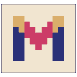
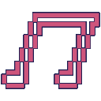

Click
where you want to go
·
Drag
to look around
Apoorva
Next
Close
Stand up
Esc
Take me to
Open the door
0/8


Things you've found so far
×
Get in touch
×
House map
×
Select a room to take you there
Take me there
Mera Ghar
loading the house…